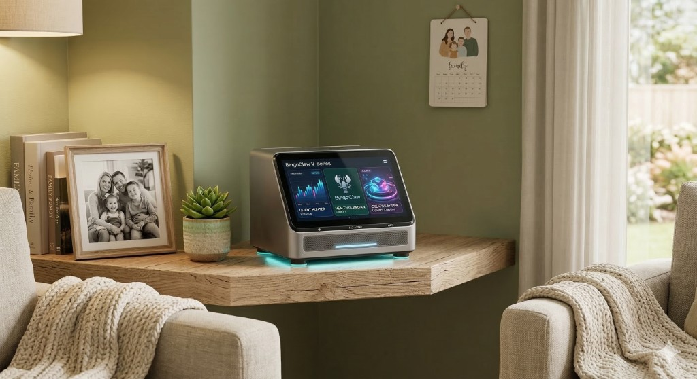
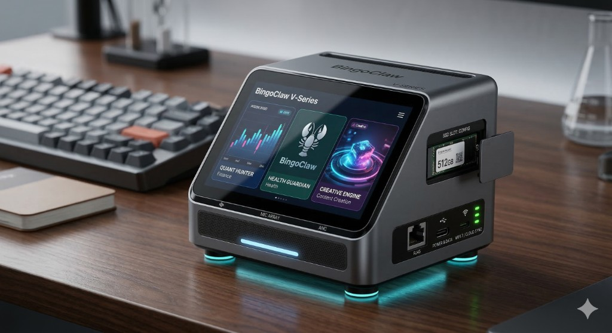
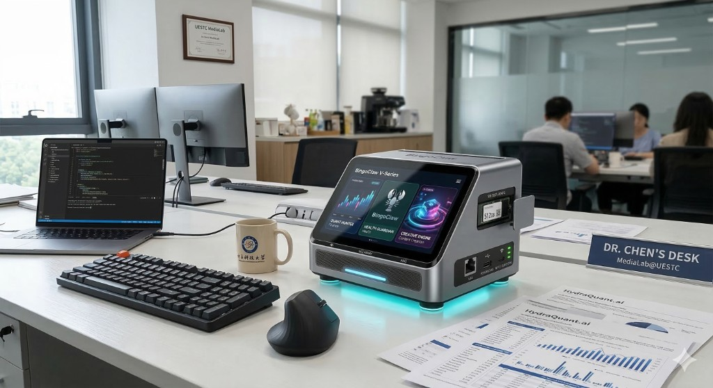

Quant Hunter
Finance-grade visualization for biomarkers and trends—charts, drivers, and signals in one glance.
BingoClaw V-Series · Health Guardian
ClawdCare is an out-of-the-box local AI health hub: bring together labs, imaging, wearables, and PDFs on your hardware, then turn longitudinal data into a repeatable test-and-action loop—powered by LifeClock science and a trust-first architecture.

BingoClaw V-Series — aluminum chassis, edge display, cyan accent lighting. Health Guardian at the center of your home.
Product
A compact desktop appliance with a slanted glass display, bead-blasted aluminum, and purposeful cyan lighting. Three modules frame the experience—Quant Hunter for data, Health Guardian (the ClawdCare core) for longitudinal wellness, and Creative Engine for multimodal AI workflows.
Finance-grade visualization for biomarkers and trends—charts, drivers, and signals in one glance.
Your family's anti-aging and prevention layer: LifeClock interpretation, retest priorities, and actionable plans.
Multimodal AI for summaries, imaging context, and voice—running in a restricted, auditable envelope.

Design & engineering
User-accessible M.2 NVMe storage, RJ45 and USB-C (power & data), WiFi 7 / cloud sync indicators, and a front mic array with ANC for clear voice sessions. Thermal vents and mesh acoustics match compute-class reliability with living-room quiet.

Where it lives
The same industrial design language works in a Media Lab workflow or beside family photos: credible, calm, and unmistakably premium tech—because health infrastructure should feel as serious as the decisions it supports.
Platform
ClawdCare is a health operating layer—not a one-off chatbot. It connects ingestion, intelligence, action, and a gated ecosystem so your data stays useful across years, not minutes.
Auto-import physicals, lab PDFs, imaging summaries, wearables, and household profiles. OCR, field mapping, and a structured longitudinal record.
LifeClock core: biological age trends, cluster assignment across 64 phenotype groups, driver decomposition, long-horizon risk hints, and retest prioritization.
Next retest windows, missing data to collect, behavior nudges, clinician talking points, and family-aware reminders—turning insight into execution.
OpenClaw-inspired expansion with medical guardrails: allow-listed skills, read-only defaults, dual confirmation for external actions, sensitive-field isolation, and full audit logs.
Science
Our algorithmic foundation builds on peer-reviewed work: a model trained on vast real-world longitudinal visits, encoding a life-course clock and discovering dozens of health-state clusters—so your trajectory is interpreted in context, not as a single snapshot.
Training signal from tens of millions of longitudinal clinical visits and millions of individuals—designed for real-world heterogeneity, not toy datasets.
64 clusters capture distinct risk and lifestyle patterns—so recommendations reflect cohort-level structure, not generic advice.
LifeClock isn't vanity scoring—it's a task prioritizer for retests, drivers, and the next 90 days of disciplined follow-through.
Privacy & trust
High-net-worth families and privacy-native technologists do not want sensitive history mirrored by default. ClawdCare is built as a local-first container: physical isolation, user sovereignty, and an honest threat model—including a curated agent surface in health mode.
| Typical cloud wellness | ClawdCare approach |
|---|---|
| Upload-first archives | On-device M.2 storage · default non-export |
| Ephemeral chat UX | Durable longitudinal record & retest loop |
| Single-user accounts | Household views & coordinated care |
| Opaque models | Cluster + driver explanations tied to your data |
Pricing
Hardware priced for reach; subscription aligns with mainstream preventive health anchors while reserving advanced longevity tooling for power users and families managing complexity.
$199 one-time (target)
Local terminal · trust anchor for the home
$19 / mo or $199 / yr
For most families
$79 / mo or $799 / yr
Deep programs
Partner labs, imaging, and concierge services may carry separate fees; optional referral economics align with CLIA-grade providers. Figures are directional per business plan V5.4 and subject to change.
Leadership
Building ClawdCare requires edge hardware, health informatics, compliance, and rigorous AI—not generic SaaS alone.
Chief Scientific Advisor
Harvard & MIT trained; Member, Academia Europaea; extensive publication record across top-tier journals; guides medical AI architecture and privacy-preserving health data practice.
Founder & CEO
Professor, UESTC; founder of Media Lab@UESTC; 200+ papers and 100+ patents; leads product strategy, systems architecture, and partnerships.
Chief Technology Officer
Professor, UESTC; Ottawa Ph.D.; computer vision, segmentation, and deep learning optimization for on-device health imaging pipelines.
Chief Scientist
Tsinghua Ph.D.; multimodal LLMs, robotics vision, and medical AI; former Samsung Research America; standards and patent experience across video and imaging.
Chief Health Officer
Sensor networks and chronic-care analytics; US patent holder in integrated monitoring; designs personalized health programs grounded in evidence.
Roadmap
From alpha devices in Orange County to ten-thousand-unit production and a reproducible retest cohort—execution beats hype.
Alpha local terminal & structured-record MVP; 300–500 seed units in Irvine.
LifeClock productization, first retest-closure system, restricted OpenClaw health skill framework.
1.0 release; first 10,000-unit manufacturing run; initial longitudinal retest population.
Household & multi-member Pro tiers; expanded lab and imaging partner network.
ClawdCare is the trust-driven loop: hardware you can see, science you can cite, and data that stays yours by default.